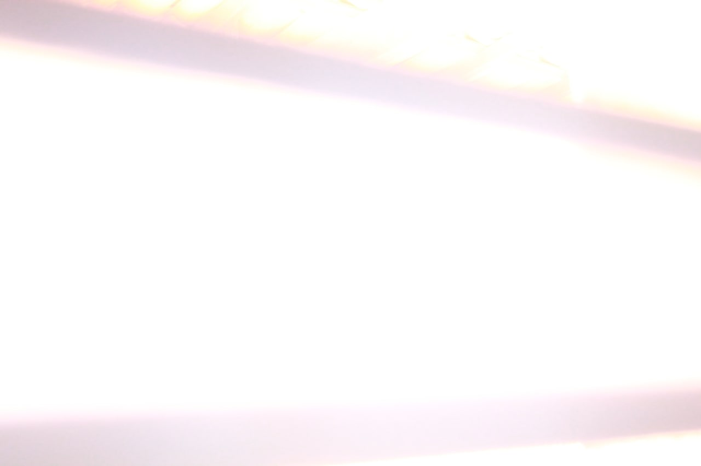
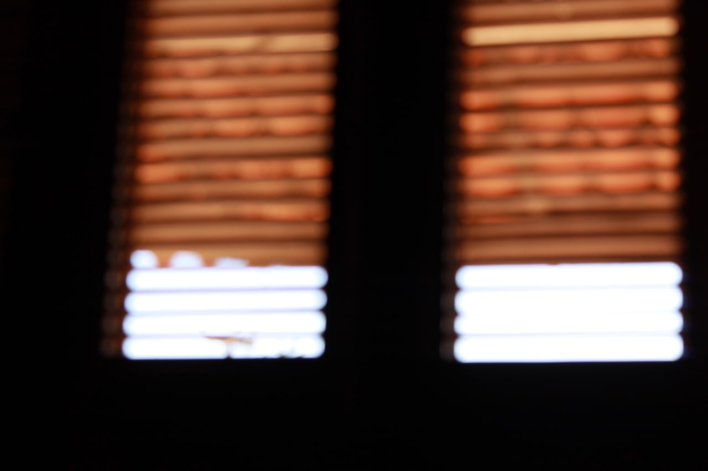

- A Marca da Morte
- Argentinos sabem cozinhar?
- House Spoiler
- Fotos do Washington
- A Fantástica Fábrica De Golpes
- Aliens
- Assalto na Paulista
- Bingo Hell
- Desmaio
- Encontros
- Entre Rosas
- Bíblia Sagrada: Gênesis
- Sandman
- Tudo em Todo Lugar ao Mesmo Tempo
# A Marca da Morte
Caloni, 2022-08-08 <cinemaqui> <cinema> <movies> [up] [copy]A Marca da Morte é um terror que cria seu clima usando outro gênero. E ele o faz por tanto tempo que quase sentimos o gostinho de estar fazendo parte de um slasher com sentimentos e opinião. Os discursos ocasionais que surgem da boca de personagens improváveis em sua época, e por isso mesmo soam artificiais, são tão divertidos quanto pertinentes hoje em dia. Além desse divertido jogo de cena, também existem as cenas de sexo que nem mencionei, nem mencionarei. Não é tempo para isso.
O roteiro de Ti West, que também dirige e produz esse filme, é redondo, intenso e convidativo. Ele chama o espectador para um bate papo descontraído situando sua história no saudoso ano de 1979, logo no final da era do amor livre e início do momento em que devemos ir além. As pessoas já entenderam o recado dos hippies e estão prontas para explorar a própria sexualidade no conforto do lar. É nisso que aposta o produtor de filmes independentes da história, que reúne duas belas garotas; uma delas é a própria esposa; e o ator, um garanhão afro pronto para brilhar em um pornô diferentão: com história, diálogos e atuações.
Pelo menos isso é o que acha o cinegrafista do projeto, que encontra a racionalização perfeita para dizer que está "filmando arte" enquanto aponta a câmera para a ação regada a gemidos e apenas para maiores. Mas não se preocupe, pois não há sexo explícito, e o diretor do filme dentro do filme é um alívio cômico pontual em meio a uma atmosfera pró-sensualidade irrestrita usada como bandeira para a sanidade social que atinge o âmago das pessoas e sua suposta integridade moral.
A época do fim dos anos 70 está certa porque os filmes que contratavam o status quo vieram de lá, mas não só por isso. O filme contém uma sempre presente metalinguagem, algo inevitável quando ele começa a misturar gêneros e se rotular como uma versão consciente de Psicose, clássico de suspense de seu mestre Alfred Hitchcock, e não Um Drink no Inferno, diversão inconsequente de Robert Rodriguez.
A trilha sonora comenta com seu extremo bom gosto o quão comprometido o filme está em se apaixonar pela visão da época hoje em dia. Até demais: a qualidade é excelente, mas sua diversidade e rapidez na troca de temas evidencia nossa era Spotify, que se preocupa com quantidade sobre qualidade, mesmo que as músicas sejam de fato muito boas. É o ritmo e o tom eclético que incomodam por serem antinaturais.
Outro traço artístico que saiu de moda, mas aqui é quase necessário, são essas divisões de tela, que narram gerações separadas no tempo enquanto promove comparações, de valores e de momentos. Nostálgico e melancólico, apresenta um casal de velhinhos decrépitos que já passou do prazo de validade de se divertir, e quem envelhece -- de verdade, não os posers que desejam se manter para sempre descolados -- certamente se identificará. Faz pensar em como viver o momento nos faz cair nessas armadilhas da vida.
Os vilões desse filme não chegam a ser tridimensionais, mas seus estereótipos possuem uma alma perene demais para ser ignorada. E isso é valioso quando eles começam a tocar o terror. Torcemos por eles. Isso é errado? Pode ser. Mas torcemos para os mocinhos e moçoilas também, o que torna as emoções mais complexas. Não espere um slasher de quinta categoria. Esse está mais para uma terceira, e com sorte passará no teste do tempo como um exemplo de como fazer um filme de gênero e se tornar inesquecível pela pureza das intenções.
O slasher em si é eficiente e gráfico. O uso da noite sempre favorece os efeitos visuais. Os cortes rápidos também. Não há muita tortura para os que não gostam de olhar. Basta virar a cara algumas vezes. Já para os que gostam, tenho boas notícias para você: sabe quando alguém pisa em um lindo prego no chão com o pé descalço? Está lá, e um pouco mais do que isso. Há uma certa homenagem à escatologia também, o que me faz lembrar Arraste-me para o Inferno, aquele terror divertidíssimo dirigido por Sam Raimi depois que ele se cansou dos primeiros filmes do Homem Aranha. Onde será que anda, aliás, o diretor de filmes tão fantásticos quanto arrepiantes?
Bom, torçamos por Ti West e sua frente slasher de qualidade. Não é pelo "neo terror" ou qualquer nome apelativo do gênero. É pelo bom e velho susto que logo antes leva à reflexão. Ou à loucura. West é um cineasta equilibra emoções em filmes de baixo orçamento.
# Argentinos sabem cozinhar?
Caloni, 2022-08-08 <essays> [up] [copy]Um amigo meu diz que argentino não sabe cozinhar. Seu ponto é simples e direto: eles não sabem fazer arroz e feijão, que são dois pratos brasileiros que a maioria do mundo já aprendeu. Porque é muito fácil.
De fato. Argentinos não costumam cozinhar essas iguarias fundamentais do pobre tupiniquim. Nossos hermanos apenas colocam uma carne de muito boa qualidade na brasa e tiram quando está pronta. São mundialmente conhecidos por colocarem carne na churrasqueira, uma atividade que hoje até mulheres conseguem desempenhar com certa facilidade. Ou seja, não há desafio nem a necessidade de habilidades especiais.
No entanto, outra questão é colocada pelo meu amigo sobre o doce de leite argentino: apesar de muito bom, se trata de um produto industrial.
Mas que eu mal lhe pergunto: e qual o problema?
Seria bom se todas as maravilhas da alta gastronomia pudessem estar disponíveis na seção de congelados e fossem mesmo uma maravilha, como os fabricantes dizem ser (spoiler: não são). No entanto, não é tão simples assim pegar um alimento fresco, preparado com os melhores ingredientes à mão e manter sendo produzido para as massas.
Já alguns produtos mais simples como doces podem se beneficiar dos processos químicos e engenhosos descobertos pela indústria para reproduzir em escala alguns sabores bem conhecidos em uma região. Este é o caso do doce de leite argentino, cujo sabor em geral respeita algumas métricas: acidez, sabor de baunilha, mais consistente que doce de leite mineiro.
Este é um sabor apreciado pelos habitantes dessa região. Seria possível reproduzir em outros lugares? Não vejo por que não. Exceto pela falta de demanda, como ocorre no Brasil, aliás. A marca La Sereníssima produz doce de leite na Argentina e no Brasil. Quando viajo costumo comprar essa marca, mas também encontro a mesma marca no mercado do bairro. E adivinhe só: não é o mesmo sabor. Falta caramelo e uma certa acidez na versão abrasileirada.
Como seria bom se o brasileiro tivesse bom gosto...
# House Spoiler
Caloni, 2022-08-08 <cinema> <series> [up] [copy]Acabou a sétima temporada, então fomos para a última. A mulher deu play e assistimos o que pensávamos ser o primeiro episódio da última temporada de House MD.
Só que não. Era o último. Aprendemos na última cena.
Mas até então eu estava analisando como se fosse a primeira, o que rendeu alguns insights. Nem todo spoiler vem para o mal.
Por exemplo: deu para entender todo o episódio. Sério. Mesmo sem ter visto nada da última temporada. Nós imaginamos as partes que faltam porque estamos o tempo todo trabalhando as lacunas de conhecimento implantadas na história. Descobrir uma parte da fórmula sendo exposta dessa forma é gratificante e ao mesmo tempo vê-se parte da trapaça de soar como um roteiro esperto e intrigante.
Outro aspecto do final fascinante é como eles retomam, observam ou respeitam a conexão com Sherlock Holmes e alguns episódios das aventuras do detetive original, como forjar a própria morte. É uma homenagem e um aproveitamento do que não existe tão bem na adaptação.
# Fotos do Washington
Caloni, 2022-08-13 [up] [copy]  
Os primeiros trabalhos desse desconhecido fotógrafo nos remetem a épocas mais lúdicas, quando a vida era mais simples e algumas sombras e formas eram o suficiente para preenchermos uma tarde preguiçosa em uma análise nada rebuscada, feita por filósofos de primeira viagem, apalpando a insignificância e platitude de um universo ainda novo nos olhos de uma criança. A geometria buscando um padrão harmonioso e as cores prevalecendo sobre o foco. Eis o truque da arte moderna: ela não diz nada que já não esteja na cabeça de quem vê.
# A Fantástica Fábrica De Golpes
Caloni, 2022-08-24 <cinemaqui> <cinema> <movies> [up] [copy]Este documentário político e totalmente parcial possui um nome ótimo e bonitinho, mas ao longo da projeção se revela apenas um chamariz. Seu conteúdo é problemático e sem estrutura, que cai naquelas armadilhas de quem está começando a fazer cinema. Empolgado com as possibilidades do resultado de sua pesquisa de campo, A Fantástica Fábrica De Golpes mostra conclusões demais e análise crítica de menos; para piorar em uma ordem duvidosa.
Seu idealizador é Victor Fraga, que junto de sua equipe agradecem nos créditos finais os cerca de 500 colaboradores/investidores de uma plataforma de crowdfunding, pois sem eles e seus cerca de 60 mil reais o filme não existiria. Não é por menos: dedicando 80% de seu tempo para atacar a reputação da maior emissora do país, a Rede Globo, não há outra forma de produzir este filme senão pela ajuda dos anônimos da internet e uma boa dose de voluntariado. É esse tipo de cinema que gostamos: corajoso, que arregaça as mangas e que coloca a cara a tapa.
O tema pouco importa em um projeto desses, desde que nos conte algo de novo. O que não é o caso. Se trata de uma série de recortes de entrevistas seguidas por uma narrativa que deseja mostrar a trajetória em torno do impeachment da ex-presidente Dilma Roussef e a prisão do ex-presidente Luís Inácio Lula da Silva. Enfim, todas as circunstâncias em torno do eufórico período político brasileiro entre os anos 2016 e 2019.
Porém, ao mesmo tempo seu objetivo é unir estes anos com acontecimentos mais remotos, que se conectam com a já citada emissora de TV, jornal, revista e rádio. A vaga ideia da fabricação de golpes pela grande mídia busca estabelecer algumas sinapses entre manchetes, ditadura militar e o processo político no Brasil.
Para isso o protagonista fundamental é outro documentário, bem conhecido e já velhinho, lá da década de 90. Se trata do Muito Além do Cidadão Kane, produção britânica de Simon Hartog -- um diretor de pouquíssimos trabalhos -- e que esboça a arquitetura do poder midiático de Roberto Marinho no comando de produzir conteúdo de comunicação em massa para os milhões de pobres alienados leitores e espectadores brasileiros.
E aqui começa a ironia. Para nos iluminar a respeito da construção de narrativa o filme constrói uma versão completamente partidária. Na sua inocência espera, acredito, que o espectador identifique a sua forma de contar a História como a correta, e a outra, em contrapartida, como a errada. Não há meio-termo.
É muito curioso esse processo, pois quando há o mero consumo somos movidos pelos nossos preconceitos a usar nossa pré-formada opinião como lente de interpretação dos fatos. Ao assistir a um filme que explica como as narrativas são criadas, sendo ele próprio uma narrativa, a questão se limita a uma escolha de opiniões, que é uma decisão, se formos analisar, totalmente dissociada do pensamento crítico.
E como já comentei, o discurso é abertamente enviesado. Não são ouvidos lados para a expansão das múltiplas visões a respeito de um fato. A única visão defendida pelo filme é mostrada pelos diferentes ângulos de seus entrevistados, que percorrem as opiniões de esquerda que todos minimamente informados conhecem, para potencialmente informar alguém desinformado. Seria esse o objetivo? Como eu comentei no começo, a consequência é confusa na melhor das hipóteses e de mau caráter na pior. Como um YouTuber já dizia, ou a pessoa está enganada, ou está enganando.
# Aliens
Caloni, 2022-08-24 <cinema> <movies> [up] [copy]A visão de cada diretor desta saga espacial reflete seu tempo e seu momento. Enquanto Ridley Scott começou o que Pauline Kael chamou de "boo movie do espaço", James Cameron transformou em uma luta entre big mamas. Enquanto isso, David Fincher em Alien 3 consegue ser boring mesmo falando sobre aliens cachorros em um presídio galáctico.
E o diretor francês de Amélie Poulain usa seu senso de humor cartunesco e exagerado e o terror no espaço vira um episódio de ação nas estrelas. Há toda uma construção de idéias vindas de Joss Whedon que é a melhor coisa do filme, mas que mal orquestrado geram momentos isolados de uma história sem uma narrativa coesa. É o cinema de sensações nascendo, sem a barreira da história com começo, meio e fim.
A saga Alien em retrospecto acaba se tornando uma análise de gêneros no mesmo universo. É certo que todo filme de Star Wars é de fantasia, todo filme de Star Trek é de sci-fi. Alien navega entre terror, ação, suspense e agora comédia.
# Assalto na Paulista
Caloni, 2022-08-24 <cinemaqui> <cinema> <movies> [up] [copy]Noite fria na pré-estreia de Assalto na Paulista em um cinema a poucas quadras de onde ocorreu a ação criminosa que inspirou o filme, um assalto a cofres privados na calada da noite em um banco famoso que levou cerca de 500 milhões de reais em pertences e espécie. O frio não impediu que tivéssemos uma sala lotada para ver a nova obra dirigida por Flávio Frederico e roteirizada por Mariana Pamplona, nem a ilustre presença da grande maioria do elenco e equipes. Este projeto ficou anos em marcha lenta por conta da pandemia, mas finalmente irá atingir 22 salas no país esta semana.
A sensação geral dessa noite foi de vitória, e a sessão convenceu ao público, que aplaudiu no final. Nem que fosse por educação. O filme tem um quê de apelo comercial misturado com um estilo de arte cada vez mais em voga: uma narrativa solta sem pretensão alguma em contar uma história de começo, meio e fim. É o cinema de sensações desprovidas de contexto. Seus protagonistas são pessoas comuns com histórias de vida pautadas por traumas gerados pela violência. E ambos respondem com mais violência.
Embora de maneiras distintas. Enquanto Rubens (Eriberto Leão) é a explosão do chefe, de quem dá as cartas custe a quem custar e que mantém as rédeas da operação mais na base do medo e do berro, Leônia (Bianca Bin) é a figura feminina ou sentimental da trama, que reconhece que pode haver uma luz no fim do túnel sem ser o trem. Seu choro em meio à ação pode ser entendido como o desespero de quem não consegue que as coisas sejam do jeito que quer. É o mimimi das vítimas de abuso, mesmo que a vítima atire bem.
Este não é um filme de assalto onde reconhecemos a inteligência da quadrilha e nem possui reviravoltas muito inteligentes. Quando entendemos que pessoas sempre podem morrer para gerar catarse ou resolver um dilema é quando a tensão de todas aquelas horas arrombando cofres na surdina durante a madrugada some. No entanto, há tensão na maior parte do filme, e é ela que faz surgir uma adrenalina na poltrona, nos segurando nos assentos para conseguir ver o que virá além, mesmo que previsível.
A produção caprichosa compensa o resultado pouco criativo. É gostoso ouvir a seleção de músicas escolhidas a dedo para cada momento. A montagem fluida gosta de passear entre veículos e momentos diferentes na vida dessas pessoas, e os cortes ocorrem entre uma boleia de caminhão no passado para um carro na capital paulista no presente, ou entre um ônibus no Paraguai no presente e um carrinho de rolimã descendo a rua em um passado distante. Funciona. Nem que seja pela sensação vazia de uma noite fria.
# Bingo Hell
Caloni, 2022-08-24 <cinema> <movies> [up] [copy]Este terror slasher é ruim do começo ao fim. As pessoas berram o tempo todo e estão histéricas, mas não sabemos o motivo. Inclusive o diretor e o roteirista, ambos tendo um caso sério com drogas pesadas como se elas dessem habilidades especiais de cineastas (spoiler: não dão). A história gira em torno de uma comunidade, ou o que sobrou dela, pois a maioria se mandou. As matronas Sra. Mexicana e Sra. Negra tentam manter todos unidos contra as ofertas abusivas de compra de imóveis dos ricaços malvadões. Até que chega um Sr. Branco, compra o bingo local e começa a dar prêmios abusivos. Que audácia! Ninguém lhe contou que essas etnias não gostam de dinheiro? Eles só querem ficar juntinhos na miséria, criando seus filhos por mães solteiras ausentes e avós trabalhadoras (o que elas fazem, mesmo? Se meter na vida dos outros, pelo jeito). O gore e os efeitos digitais de péssima qualidade estão em todas as cenas deste filme dirigido como um clipe mal feito, editado por quem está tendo um ataque epilético e não tem a mínima condição de juntar duas cenas e trazer significado ao caos. Sua equipe tem cara de amadora, mas sem muita paixão pelo cinema. Eles evitam pegar uma ideia e transformar em algo que lembre um filme. Eles preferem torrar a grana da Amazon Studios em fotografia saturada e pós-produção massiva. Assim como os heróis do filme, eles também não ligam pra dinheiro.
# Desmaio
Caloni, 2022-08-24 [up] [copy]Desmaiei duas vezes esse ano. A primeira delas foi por causa da vacina, que me deu febre de madrugada e me impediu de terminar meu número 1 (aka dar um mijão) no meio da noite. O resultado foi uma poça de sangue ao lado do banheiro e uma sensação nova, vibrante, de que poderia ter morrido lá mesmo, ou que deixar de viver é algo que pode acontecer a qualquer momento, "basta estar vivo"... ah, e um galo. Teve mais esse resultado.
O segundo desmaio foi na coleta de sangue. Em casa também. A enfermeira começou o procedimento alguns minutos depois de chegar. Apaguei no terceiro ou quarto picar de uma agulha tentando se fixar em uma veia pulsante. Foi questão de segundos de acordo com minha esposa. Para mim, em ambas as situações, minutos.
O curioso desse momento foi a memória me pregando peça. A moca chegou há pouco tempo. Quando acordei é como se nunca a tivesse visto na vida. É como se aquela situação dela na minha frente nunca tivesse existido no espaço-tempo. Tudo em volta do ocorrido nunca existiu por alguns segundos e eu vivi sem saber quem eu era.
Contexto é tudo para seres humanos. Sem contexto perde-se o fio da meada que forma o tecido do universo que está nos contando essa história dos átomos e das forças físicas e tals. Sem contexto, ainda que por alguns segundos, nós não existimos. Somos espectadores passivos de eventos naturais em torno do que chamamos de corpo, que com contexto chamaríamos de nosso, de eu. Sem contexto o que chamamos de mundo não existe.
# Encontros
Caloni, 2022-08-27 <cinemaqui> <cinema> <movies> [up] [copy]Encontros é um abraço de "oi, sumido" em um mundo pós-apocalíptico. E por apocalipse eu quero dizer a pandemia que varreu as relações humanas para debaixo do tapete. Agora é a hora da reconstrução.
O rápido filme em quatro atos do diretor coreano Hong Sang-soo (A Câmera de Claire) comenta em um melancólico e burocrático preto e branco reencontros entre amigos, amantes, família e profissionais. Todos após longo hiato. Há mudanças de expectativa o tempo todo na história. Inclusive troca de papéis no meio de uma sequência.
Para fazer um carinho no caos iminente nas relações que tateiam o território do outro com cautela os diálogos são simples a ponto de serem esquecidos no meio da cena.
A câmera estática e tímida quase nunca se move. Só quando precisa. Ela enfoca essa retomada de vidas com um otimismo honesto, mas evita construir rimas. A montagem é chapada, quase inexistente.
É um filme de teatro, onde as expressões dos atores comandam o tom, mas eles também estão tímidos. Tanto que quando um diálogo desajeitado -- e há mais de um -- é proferido sentimos vergonha alheia. Mas ninguém no recinto percebe.
Não olhamos para Encontros com reação alguma e o filme não impõe sentimentos. É um acordo tácito e velado. Vamos com calma, um reencontro de cada vez. Afinal, há muitos "oi, sumido" aguardando na fila. E nem sempre saberemos se vamos conseguir de maneira adequada. Se é que lembramos o que era adequado antigamente.
# Entre Rosas
Caloni, 2022-08-27 <cinemaqui> <cinema> <movies> [up] [copy]Pelo menos alguma coisa você irá aprender em Entre Rosas: enxerto, hibridização, fecundação por eugenia, colheitas fora de época e como filmes franceses economizam drama em seu terceiro ato.
O filme de Pierre Pinaud e seu batalhão de roteiristas passeia pelo subgênero de superação após decadência de uma protagonista nostálgica e melancólica. Ela perdeu o pai, um floricultor de prestígio, há 15 anos, e o mundo mudou em sua volta; mas ela não. Depois de perder pela oitava vez consecutiva uma premiação de melhor criação para a personificação da indústria e do capitalismo ela terá que se mexer para aprender uma lição ou duas de que tudo muda, mas é a essência que permanece.
A aventura conduzida por Pinaud é modesta, ligeiramente engraçada e introduz seus poucos personagens para fazer volume. O único que importa, fora a participação competente de Catherine Frot Marguerite (2015), é de Fred (Melan Omerta), um jovem renegado pelos seus pais e que possui um dom que pode mudar sua vida criminosa. O encontro da florista vintage e a nova geração é a muleta que move o clichê de vencer os desafios da vida.
O tema de flores é usado em um tom documental, isolado da história. Cada detalhe que aprendemos é um episódio da National Geographic. Eles alternam entre a história ficcional e o mundo das flores, em particular as rosas, avançando um pouquinho de cada vez. Faz o espectador ser hipnotizado pelo ritmo mais do que pela sua narrativa.
A beleza das rosas não é suficiente neste filme que dialoga demais e mostra de menos. Como qualquer trabalho intelectual ele corre o risco de perder o espectador pelas beiradas se não houver paixão suficiente que mova essas pessoas. E não há. Todos estão no piloto automático na missão de salvar a arte de criar flores, mas se tudo der errado não é como se fosse um grande desastre. Um pequeno incômodo no pior dos pesadelos.
O conflito principal é se a florista aceita ter o negócio de seu pai aglutinado pelo tycoon da área (papel de Vincent Dedienne). Ela poderia iniciar uma linha especial de grife trabalhando para ele, tendo acesso a recursos para suas futuras criações. O CEO diz que a admira e não há motivos para pensarmos o contrário. Não há nada que ela tenha que ele já não tenha conquistado na última década. Fica um gostinho de orgulho bobo francês pelo individualismo que está fora de moda. E estar fora de moda não costuma ser a dança dos franceses.
# Bíblia Sagrada: Gênesis
Caloni, 2022-08-28 <books> <philosophy> bible> [up] [copy]Esse primeiro livro da Bíblia é focado na origem do mundo e na perpetuação de uma tribo específica no meio da humanidade. Essa tribo se estabeleceu através de um deus, O deus, de acordo com o livro, que fez o pacto com Abraão. Que fez o pacto com Noé. Que fez o pacto com Jacó. Que fez o pacto com ele mesmo e o mundo. E o pacto dizia: irás cortar a ponta do seu pingulim. Seu, de seus familiares e de todo seu povo.
A história com certeza foi escrita há muito, mas muito, mas muitíssimo tempo atrás. Ela contém genealogia de antepassados, sacrifícios dos mais loucos e pessoas enganando pessoas por todos os lados. É uma visão bruta e cruel de um mundo dominado pelos mais fortes.
Mulheres nesse mundo obviamente são propriedade, e o que acontece com elas é o mesmo que aconteceria hoje com qualquer objeto que pertence a alguém. Se alguém estuprou sua irmã a prioridade é recuperar o prejuízo de perder a virgindade de uma potencial venda no casamento. O estuprador oferece se casar com sua vítima, o que implica em um dote milionário. Os homens da família da pobre coitada resolvem aceitar esse acordo.
Desde que a família e os servos do estuprador, incluindo ele próprio, façam o pacto. Ou seja, cortem o pingulim.
A bíblia é um conjunto de livros muito velhos, e este é o mais velho deles. Estamos em um momento na história da humanidade em que seu deus é alguém caprichoso e violento. Mas ele protege quem faz o que é certo. E o que é certo depende de uma moral que ainda está em construção.
Se você fizer o que é certo, será aceito. Mas, se não o fizer, tome cuidado! O pecado está à porta, à sua espera, e deseja controlá-lo, mas é você quem deve dominá-lo.
Esse é o primeiro livro de cinco, que compõem o Pentateuco, ou Torá entre os judeus. Neles há histórias que remetem à Lei, regras de conduta deste povo que devem ser obedecidas a ferro e fogo, por mais bizarras que pareçam.
Tome, por exemplo, Abrão, antes de seu nome ter dois as. Esse pobre coitado que não conseguiu ter filhos por mais de cem anos. Depois que ele consegue deus chega lá e manda sacrificar o menino. E Abrão vai lá sacrificar o primogênito. No último minuto deus manda um anjo dizer que é pegadinha do malandro (sorte que ele chegou a tempo). Esse tipo de brincadeira entre sacrifícios e a busca por sermos uma versão melhor de nós mesmos através do sagrado e do divino é uma das partes mais inspiradoras dessa literatura. Ela não está relativizando nada. Ela afirma que existe uma verdade, um bem, uma moral correta. A virtude suprema. E ela afirma isso por meio de histórias impactantes, absurdas, que pegam no âmago de nós, seres humanos. Olhando para os dias de hoje é como se houvesse uma verdade que era muito óbvia entre nossos antepassados, algo inquestionável, o que tornava a vida mais simples, e que no decorrer das gerações foi se tornando algo complexo, algo "tudo depende". Hoje é algo "nada é certo", "não existe apenas uma verdade". Você já ouviu alguém comentar frases semelhantes a essas? E como está a mente e a paz espiritual dessas pessoas que comentaram? Um lixo, certo?
Venham, vamos descer e confundi-los com línguas diferentes, para que não consigam mais entender uns aos outros.
A Bíblia não é leitura fácil, e quanto mais antigo o livro menos fácil é para nós entendermos o que está acontecendo com aqueles humanos. Mas por ser uma ficção, assim como A Revolta de Atlas, ela se estabelece como algo maior do que uma não-ficção, que hoje soaria pedante, obscura e insensível à causa humana. Como um conjunto de historietas fiéis à visão daquela época, Gênesis nos serve como um guia espiritual para algo além da era da tecnologia e das libertinagens que vivemos. Mas há algo além. Ler livros mais antigos nos fornece a pista para buscarmos este algo. Então, sim, ler a Bíblia te leva para mais próximo de deus.
E você nem precisa cortar seu pingulim.
# Sandman
Caloni, 2022-08-28 <cinema> <series> [up] [copy]Para compor o elenco dessa produção a Netflix encomendou um navio negreiro privado, como nos velhos tempos. Um navio com superlotação de mulheres. Chama a atenção de um jeito ruim, pois falta significado exceto o mercadológico, pois grandes corporações como a gigante de streaming estão há uma década seguindo a tendência, que a essa altura deve ter se provada lucrativa.
Para colocar o suporte de segundo escalão em alto relevo a série escala por contraste atores brancos de pouca expressividade como o mocinho e os vilões. Sandman, o personagem-título sem ser protagonista interpretado por Tom Sturridge, faz biquinho quando está nervoso e seu arqui-inimigo, ou algo que o valha, Coríntio, interpretado por Boyd Holbrook, sorri como o vilão do primeiro Vingadores (Logan?), filme da Marvel que comprovou que para ser um vilão de sucesso basta mostrar os dentes. Coríntio mostra os lábios. E é gay. Há mais cenas sensuais com gays do que hétero, o que é outro sintoma mercadológico.
Talvez eu esteja pegando no pé de fatos irrelevante para uma série baseada nos quadrinhos. As atuações em obras do gênero deixaram de ser importantes desde... séries da Marvel? O importante é o universo. E o quanto os fãs se sentem acariciados (isso foi gay).
Nesse caso o universo de Morpheus, o deus do sono, é particularmente atraente. Ele mantém um nível filosófico invejável, empacotado em frases de autoajuda, mas se sai melhor que o porre dos filmes do Zack Snyder e seus heróis de capa. Isso acontece porque esses são seres de outro mundo, não humanos fantasiados. Se bem que até o Homem de Aço nas mãos de Snyder consegue ser um sonífero involuntário.
Eles são eternos e seus dramas não são sobre questões de vida ou morte, ou até questões humanas como justiça. Eles já nascem com funções definidas. A pegada desses autoproclamados Perpétuos é sobre a magia de acompanhar uma narrativa sem poder alterá-la. E a graça é eles mudarem de qualquer jeito.
O início da série peca por nos jogar na ação de heróis que não ligamos. Sandman é preso, mas nem conhecemos esse sujeito, e ele conhece Constantine fazendo exorcismo no casamento da princesa inglesa, mas todo mundo some antes da metade da temporada. Existe um jogo de simplificação de histórias, referências e homenagens rolando aqui. E muita pressa em fechar arcos.
Um dos motivos é a falta de substância em histórias para quadrinhos. Não dá para gastar tanto tempo em arcos muito rasos. Outro motivo são os gastos com a produção, que esbanja efeitos visuais invejáveis para uma série de TV. Em alguns momentos chega a ser mais convincente que muitos filmes recentes de supers. Não precisamos pesquisar quanto isso custou. A resposta é "mais do que deveria".
E o resultado são altos e baixos em um universo com momentos que dão apenas um gostinho do que seria uma temporada apenas com alguns personagens. O arco de Rose Walker, por exemplo, a única protagonista da primeira temporada (que surge da metade para o final), é uma vibração de energias que se esvai bem rápido. Há pouco cinismo no ar e muita fantasia, lembrando conteúdo infantil. Há uma casa de pessoas peculiares para ajudar nessa imersão que lembra Tim Burton sem criatividade.
Com uma estrutura no roteiro deficitária -- para não dizer uma zona -- e um universo repleto de ideias fascinantes que compõem historietas que fariam mais sentido em uma antologia que não se preocupa em contar uma história maior, Sandman é uma boa surpresa em adaptações. Ele promete uma certa densidade e cumpre. Seu tom dark é mais do que espectadores de TV mereceriam. E parte desse mérito vem do navio negreiro. Muito bem, Srs. brancos produtores.
# Tudo em Todo Lugar ao Mesmo Tempo
Caloni, 2022-08-29 <cinema> <movies> [up] [copy]Tive uma tarde e noite de solteiro e pensei em fazer alguma coisa fora de casa. Mas o quê nesse frio? Bom, eu gosto de filmes, então a primeira coisa que pensei foi ir ao cinema no meio da tarde e depois encontrar ânimo para outras atividades, já que estaria na rua mesmo. No entanto, o frio estava de lascar e a única coisa que eu tive vontade de fazer foi um dos meus maiores prazeres neste planeta: assistir filme na telona.
E para escolher o filme é aquela coisa: capa chamativa, o título bizarro e talvez quem fosse o diretor. Em Tudo em Todo Lugar ao Mesmo Tempo há a união desses três desejos realizados. Seu título é horrendo, prometendo estranhezas que a gente gosta. A capa é cheia de cores, formas e tem mulheres asiáticas, sempre um bom sinal. E o diretor, ou melhor dizendo, diretores, Dan Kwan e Daniel Scheinert, são os mesmos de Um Cadáver Para Sobreviver, um filme divertidíssimo com Paul Dano e Daniel Radcliffe que assisti durante uma viagem pela Patagônia. Como estou de viagem para a Argentina essa semana me trouxe boas memórias. Vamos de "Tudo", então.
Sessão praticamente vazia no meio de uma tarde chuvosa e fria no coração de São Paulo, a Rua Augusta. O filme começa. É falado em inglês, mas também mandarim e cantonês. Um drama de família falida daqueles clichês asiáticos. Alguns traços modernos como uma jovem lésbica e a troca de papéis entre marido e mulher, pois enquanto ele é a parte fofinha ela é a mandona estressada (do inglês "bitch").
E ela é Evelyn Wang, que nas mãos da saudosa atriz malaia Michelle Yeoh aquece nosso coração. Yeoh, para quem não se lembra, protagonizou um dos melhores filmes já feitos da Ásia para Hollywood, O Tigre e o Dragão, um jovem clássico dos anos 2000 dirigido por Ang Lee. Yeoh possui a garra e a energia necessárias para protagonizar esta pérola de experimento no roteiro que a dupla Kwan/Scheinert conduz com uma competência de fazer chorar.
Na história, Evelyn está com o dia cheio. A lavanderia da família está com problemas e está sendo auditada por uma fera da Receita Federal, interpretada por outra atriz saudosa, admirável e igualmente cheia de energia: Jamie Lee Curtis (ótima por sinal). Curtis, para quem não se lembra, participa com Arnold Schwarzenegger do blockbuster True Lies, de 1994. Os atores são dirigidos neste filme de ação com vitalidade e bizarrices por ninguém menos que James Cameron. Aqui Curtis faz um alterego de Yeoh carregado de personalidade e vida. Os poucos momentos de Curtis dialogando na tela é possível perceber que essa mulher tem uma história para contar.
Porém, como dizia, Evelyn está com o dia cheio. Ela recebe a visita para o almoço inesperada de sua filha, Joy, interpretada por Stephanie Hsu da TV. Ela é coadjuvante quase sem fala na maioria dos trabalhos, como Unbreakable Kimmy Schmidt, Maravilhosa Sra. Maisel e O Caminho. Curiosamente em O Caminho sua personagem também se chama Joy, o que quer dizer que ela talvez tenha mais cara de Joy do que de Stephanie. Ela é gordinha, e talvez seja por isso. Quando você olha para uma gordinha não vem uma certa alegria no olhar?
Só que nesse caso Joy está extremamente insatisfeita com a vida, pois é lésbica, está namorando uma estrangeira e não consegue se encaixar em sua família, já que as mudanças de valores que aceitam gays, gordas e mulheres como pessoas bem-vindas na sociedade é bem recente no Oriente e suas famílias. A ponta do iceberg, aquela apunhalada sutil, é dada quando sua mãe não reconhece o namoro na frente do próprio avô, o Sr. Gong Gong.
Aliás, Gong Gong é interpretado por ninguém menos que a lenda James Hong. Para quem não se lembra, Hong foi David Lo Pan, o vilãozão de Os Aventureiros do Bairro Proibido, um daqueles clássicos de Sessão da Tarde dos anos 80. Wong está com impressionantes 93 anos e segue firme e forte.
Bom, continuando: Evelyn está com o dia cheio. Para piorar os afazeres desse dia fatídico ela ainda tem que comemorar o Ano Novo com seu pai, com quem mantém uma relação conturbada depois que foi expulsa de casa para se casar com o "bonzinho demais" Waymond.
E vou ter que parar mais uma vez de falar sobre o filme. Você não vai acreditar quem é que faz o mirrado e simpático Waymond. Você se lembra de Indiana Jones e o Templo da Perdição ou Os Goonies? Pois é, ele mesmo. Ke Huy Quan, ou Short Round, ou Data, para os íntimos. E sua energia não diminuiu em todas essas décadas.
Se me vejo muito empolgado descrevendo o elenco é porque não apenas ele é de qualidade, mas também por um motivo todo especial. Tudo em Todo Lugar ao Mesmo Tempo lida com as possibilidades infinitas da vida que não podemos ter porque estamos vivendo apenas uma. Tudo o que somos hoje é a soma de nossas decisões a cada novo dia. No filme isso não é apenas filosófico, mas literal, já que Evelyn, em seu pior momento deste atarefado dia, descobre que vive apenas uma versão, a sua pior versão, de infinitas, dentro de um emaranhado de universos que estão sendo interconectados através de uma rede de mocinhos e vilões cuja luta surgiu no primeiro universo a descobrir a existência de outros, ironicamente graças à própria Evelyn Wang em sua versão cientista gênia.
Isso quer dizer, do ponto de vista do filme, que desde o início da produção a escalação de elenco já lidou com o fato de que os atores e atrizes são, de certa forma, inúmeras formas de viver presentes no mesmo corpo ou identidade. É a metalinguagem surfando nas ondas do universo diegético da sétima arte.
A minha empolgação com essa produção não para no elenco nem na metalinguagem. Tudo em Todo Lugar ao Mesmo Tempo dá um banho de criatividade no cinema comercial, entregando um drama de ação frenético e conduzido por profissionais no ramo de artes marciais. As cenas de luta não são aqueles milhões de cortes epiléticos que estamos acostumados a ver em Hollywood. Há câmera lenta, movimentos dentro do quadro, coreografias ensaiadas por cada centímetro de onde a ação ocorre, da maneira mais imaginativa possível. Dá de dez a zero ao horrendo e vergonhoso Matrix Ressurrection, só para citar a decepção mais recente do gênero.
Apenas falando sobre cenas de luta podemos dizer que esta produção conduzida por Dan Kwan e Daniel Scheinert caminha pau a pau com referências pop de 20 anos atrás e usa como trampolim referências para ir além, nos dando a mesma sensação da espécie de "salto quântico" que existe no filme. O que eu quero dizer que as ideias são igualmente poderosas, flexíveis, empolgantes, instigantes. Faz nossa mente dar vários giros de 360 graus quando tentamos entender toda a bagunça criada nesse universo que engloba múltiplos, e todos eles nos dão uma visão enigmática e inspiradora sobre a existência humana, caminhando pela melancolia, pela pura alegria, pelo amor e pelo significado íntimo de nosso ser.
Seus objetivos temáticos dessa forma, por incrível que pareça, estão em pé de igualdade com trabalhos mais ambiciosos como o Matrix original, filme de realidade virtual e filosofia pop de 1999 dos irmãos Wachowski. Ou até Cloud Atlas, dos mesmos diretores em 2012, e seu tema de reencarnação e a jornada da vida através das eras. Não é à toa que sua equipe técnica abraça por completo esse projeto apaixonante para qualquer cinéfilo.
A fotografia de Larkin Seiple brinca enormidades ao construir todos esses universos que precisam dialogar. As paletas de cores são de um contraste elegante, nunca de mau gosto. Há tons mais melancólicos e desprovidos de luz na vida em que Evelyn é uma atriz de sucesso, e é nostálgico observar que os personagens inexistentes nessa versão estão por detrás de outra tela de cinema, enquanto seu futuro hipotético com a Sra. Auditora em um universo onde as pessoas possuem dedos de salsicha consegue, sempre que aparece, ser um misto eficiente entre o hilário e o depressivo, com detalhe para como eles tocam piano. Por outro lado, os tons do mundo onde a história se desenrola e o universo Alpha que iniciou tudo isso são semelhantes, mas na versão onde a tecnologia avançou mais ele possui tons mais escuros. Se trata da versão Black Mirror de nossa realidade. E curioso como tudo isso favorece os efeitos visuais.
O áudio nesse filme trabalha em uníssono entre edicão de som, mixagem e trilha sonora, embora talvez usar uníssono para um filme com multiversos soe inapropriado. Até porque sua trilha sonora caminha por dois temas em paralelo e é eficiente em ambos. De um lado ele comenta o caos inerente do universo e suas partículas em movimento, compondo versões ligeiramente dissonantes ou afetadas de músicas reconhecíveis, como o icônico Assim Disse Zaratustra, o poema de Richard Strauss baseado nas obras do filósofo Friedrich Nietzsch e que virou o tema icônico e usado à exaustão após isso no cinema de 2001 - Uma Odisseia no Espaço (Kubrick, 1968). Por outro lado o diretor de música Son Lux (do ótimo Looper) escolhe músicas onde a sonoridade de uma sinfonia vem bem a calhar, pois é em uma sinfonia onde inúmeros instrumentos disputam os ouvidos da plateia, algo semelhante ao que acontece quando tentamos prestar atenção em tudo o que está acontecendo neste filme e suas diferentes atmosferas.
Há muitas produções com dinheiro que não se pagam em termos artísticos, mas essa criação mirabolante se paga em dobro, pois a experiência de viver uma aventura que nos faz segurar o queixo a cada segundo é impagável. Ela nos dá pouquíssimo tempo para o deslumbramento, e por consequência desejamos ardentemente viver mais dentro nas possibilidades maravilhosas deste universo metalinguístico e, de certa forma, metafísico. São sensações que só o Cinema pode proporcionar.
Além de tudo, o humor de Tudo em Todo Lugar ao Mesmo Tempo é indescritível. Há muitos filmes trash e bizarros onde sua própria esquisitice os tornam acima da média no quesito diversão. Este além de toda a suposta seriedade de um mundo com universos paralelos em uma luta inalcançável pela maioria dos mortais contém momentos hilários por toda a história, transformando-se em um tragicômico do absurdo versão sci-fi com licença poética e filosófica. Destacaria apenas as infinitas maneiras, olhe a metalinguagem, com que Evelyn tenta pronunciar o nome do grande vilão do filme. Ou também uma versão alternativa e engraçadíssima de uma popular animação da Pixar em que o animal principal é trocado por um guaxinim.
E, por fim, poderia ser criticada a decisão de fazer uma cena de luta que envolve dois marmanjos, cada um com seu pontiagudo objeto espetado em seus orifícios anais? Poderia. Mas não estou na posição de julgar mau gosto nesse momento, pois nessa hora do filme eu paralisei, sem saber como proceder. É quase como se o dilema da heroína, que está vivendo a exaustiva experiência de viver várias realidades de uma só vez, fosse emprestado ao espectador nesses raros e absurdos momentos da cinematografia desta década que apenas o cinema com influência chinesa pode proporcionar. Então você, caro leitor, que me julgue, por favor.
Não é a primeira vez que se brinca com o tema. Existem inúmeros trabalhos muito bons com multiverso que rivalizam com este filme, e todos possuem um quê de fascínio nas possibilidades do entretenimento, onde na telona ganham uma sobrevida em mundos inteiros criados por computação. Talvez nenhum deles tenha conseguido ainda aquela sensação de completude, de trabalho bem feito em todos os quesitos e diferentes gêneros como Tudo em Todo Lugar ao Mesmo Tempo. Minha aposta é que isso acontece em um momento muito específico e atípico. Estamos no meio de uma batalha épica, som alto e trilha sonora em êxtase quando, de repente, vemos uma longa cena sem música, sem som, com duas singelas pedras dialogando sobre a existência, cercadas por um mundo onde a vida não é possível; apenas legendas. Nesse momento sabemos estar testemunhando um trabalho no mínimo único, em um universo onde a sétima arte ainda arrebata mentes e corações.
[2022-07] [2022-09]